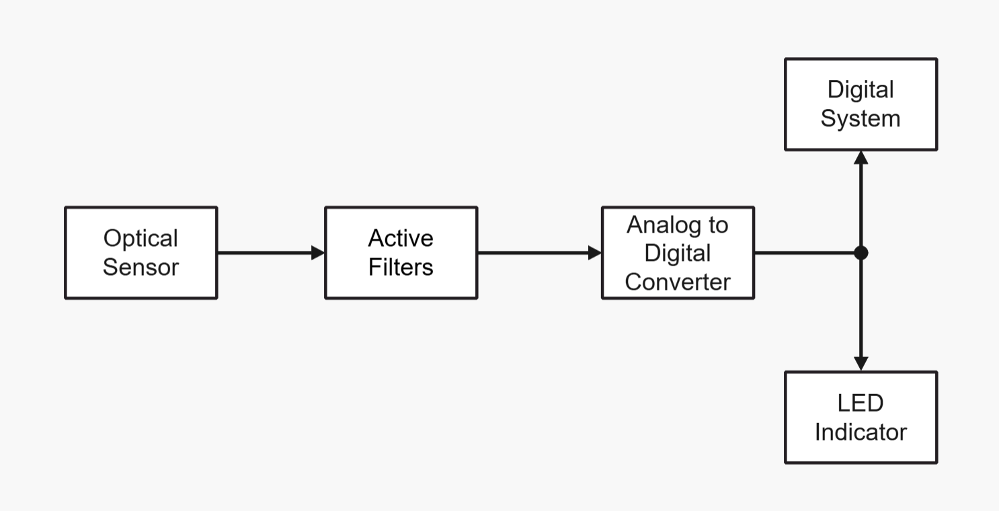
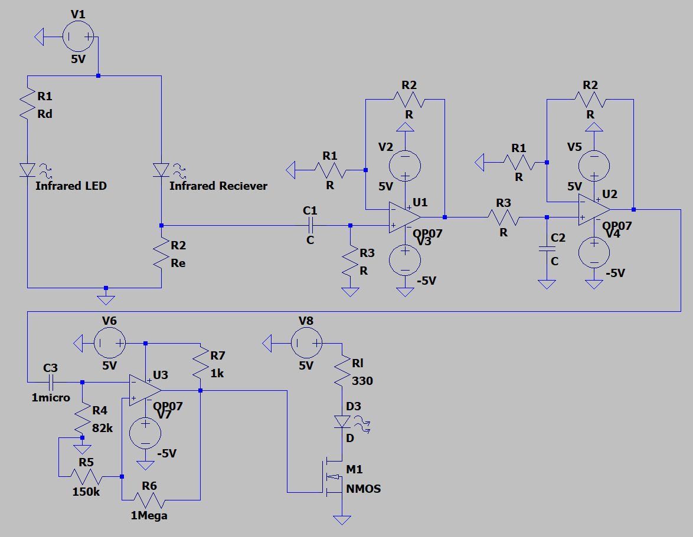

Heart Rate Monitor
The Heart Rate Monitor project involved prototyping a biometric device designed to detect and amplify heart rate signals using an infrared pulse sensor. The engineering process required designing an active bandpass filter to isolate the specific frequency range of a human heartbeat (approximately 0.5Hz to 4Hz) while filtering out high-frequency noise and 60Hz power line interference. Following filtration, the signal was boosted using a non-inverting operational amplifier before being processed through an analog-to-digital converter created with a comparator. This project demonstrated the successful integration of analog signal conditioning and digital processing to meet accuracy specifications through rigorous breadboard testing.
Functional Block Diagram

Circuit Schematic
